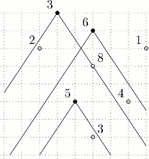

第一行两个整数n,m(1<=n,m<=200000)，分别表示手办的数量和警卫的数量。
第二行两个整数w,h(1<=w,h<=10^9)，表示每个警卫的视角的一半的正切值是w/h。（见配图）
接下来n行，每行三个整数x[i],y[i],v[i](-10^9<=x[i],y[i]<=10^9,1<=v[i]<=10^9)，表示手办的坐标为(x[i],y[i])，价格为v[i]。
接下来m行，格式同上，表示警卫的坐标为(x[i],y[i])，需接受贿赂的金额为v[i]。
保证每个点最多只有一个手办或一个警卫。
